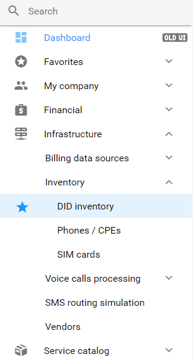
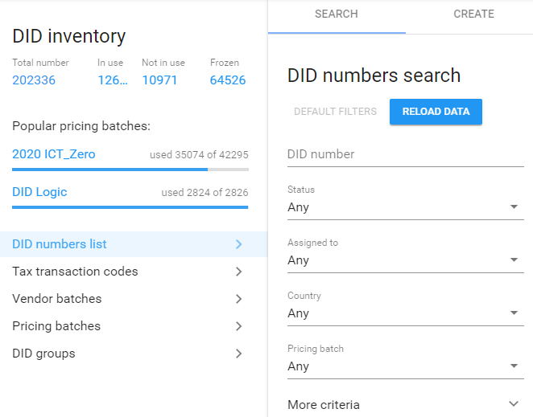
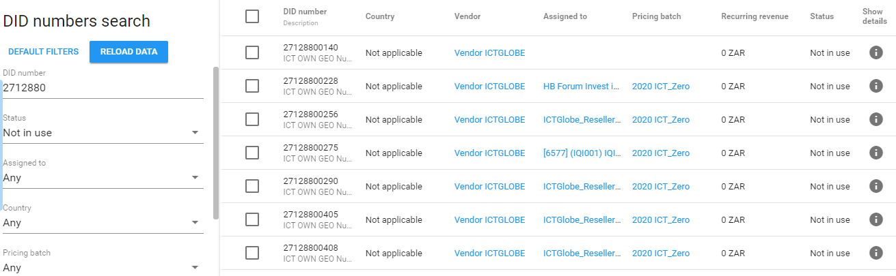
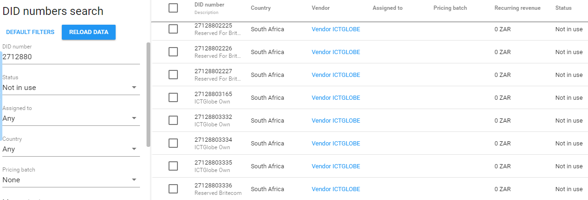
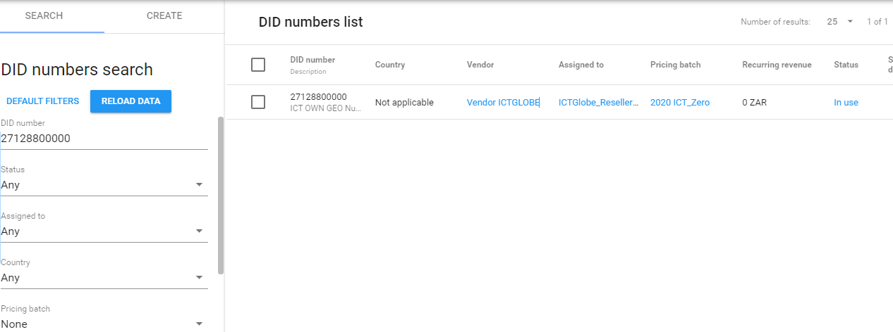
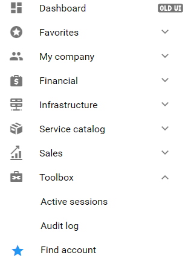
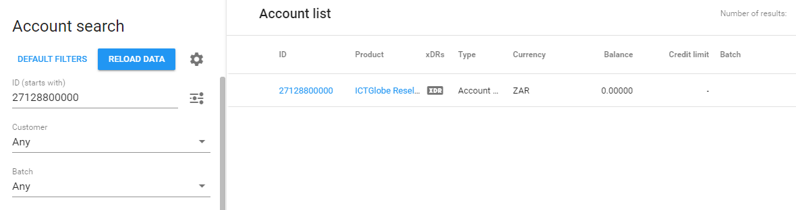
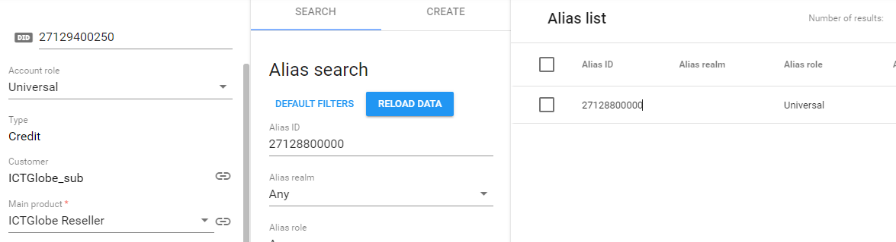
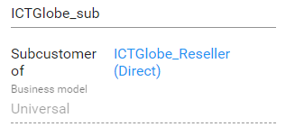

Searching for a Number
How to search for a number on Porta
1. Left on the navigation menu, select Infrastructure, then Inventory, and select the DID Inventory, from the drop-down list.
NOTE: If you will be using the number search function frequently, you can save the DID Inventory to your favourites for faster navigation.

2. Once directed to the DID inventory options, select the first availavle option

3. There are different reasons to search for a number in the inventory:
- Number availability - In this case were a specific number or number range was requested, you might need to check availability of the number, or range.
- Number assignment - In the case that a number was ported, or created from the Ninja, and upon any queries related thereto, you can start investigating by makig sure the number is indeed assigned to a reseller or customer.
4. There are different ways to search for a number in the inventory:
- Search by number range- In this case you may use only the first 4 to 7 digits, forming part of the ICTGlobe ICASA issued ranges, or part of a number that was ported.
- Seacrh using full number- Should you need to determine if a number was assigned to a reseller, or should you have a specified number request, you will be using the full number, 11 digits.
Search by number range
In tis example the number range '2712' will be searched:
1. Provide the first 4 to 7 digits of the number range you are searching, and set Status to Not in use.

From the above criteria, the following should be noted when searching for available numbers:
- DID Number: This is the available numbers in the defined number range, including their descriptions, if any.
- Assigned to: Should the number be assigned to any reseller, it will be stated her.
- Status: As per the search criteria, the number should not be in use. This means, although the numbers is assigned to a reseller profile, it is not linked to any customer as a SIP, or alias.
2. For a more defined search, the Pricing Batch can be changed to None.

NOTE: Althoug in this case the number might be free and unasigned, keep an eye on the decriptions as the number might be reserved, or recently cancelled.
Search using a full number
1. In this case you will now use the exact number, or be notified of the number in question. The full number will be used to do a number search.
NOTE: As you need to determine wether the number is allocated or asisigned, remember to change the

The number can be seen to be in use by ICTGlobe_Reseller, in this case it is assigned either as a SIP, or a Alias to a customer account.
If you are already logged in on Porta, you can also search the DID Inventory from here .
Who does the number belong to?
NOTE: As we are searching the exact allocation of a number and customer to whom it belongs, the full number must be used.
1. Left on the navigation menu, select Toolbox, at the bottom and then Find account.
NOTE: If you will be using the number search function frequently, you can save the 'Find account' to your favourites for faster navigation.

2. The number can be search by typing then number (always starting with '27'), and the select Reload Data.
The number ID will be presented, upon which you should 'click' on the number to redirect to the customer whom it belongs to:

3. You will now be able to see the Customer and in the case that it is an Alias, at the top left corner the SIP to which it is assigned.

4. Determining the reseller to who the customer belongs
- Copy the customer name, in this case: ICTGlobe_sub
- Go to 'Customer', from the drop down menu
- Past the customer name, and search, as per customer search specifications
- Then, the same as with the number search, click on the customer name
- You are now able to view the rseller for the specific customer, next to Subcustomer of 
If you are already logged in on Porta, you can also search the 'Find Account' from here .